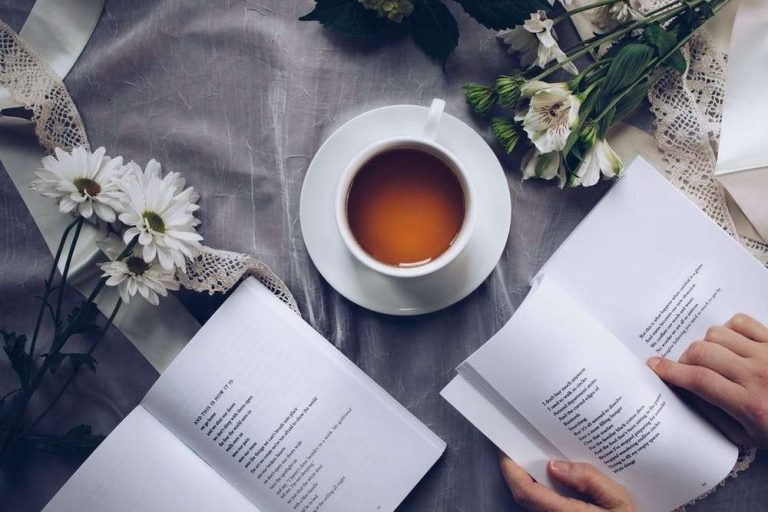

Did you know about books?
The book is a collection of rectangular papers full of useful information, and it takes a
lot of time to write and we will talk in our article on Did you know about books.
Did you know about books?
- Did you know that books can only consist of drawings, inscriptions, photographs, or things like cross-puzzles only without any writing.
- Every time you read a book you should remember the book's setting, characters, backgrounds, history, characters and sub-plots.
- The more you read books the more creative you become when you read a fiction book it takes you to another world and in this world your imagination works at its best as you try to see things in your mind.
- Reading books improves your vocabulary As you read, you come across new words, expressions, words, phrases and writing styles that improve your language ability.
- Books help us distinguish good ideas from bad ones. Reading a book allows us to learn about the different ways of life and the problems we face.
Did you know about books and their benefits
- The biggest reason we read books is to gain knowledge, books are a rich source of information.
- Reading books on a variety of topics adds information and increases the depth of the topic, and when you read a book, you learn new information that you did not know.
- Studies have shown that reading has strong positive effects on the brain by maintaining active mental stimulation.
- Did you know that you can prevent dementia and Alzheimer's disease by reading books because reading keeps your mind active.
- Reading books is a great way to exercise your brain and keep it healthy.
- Reading a book can relieve stress better than walking or listening to music
- According to studies, people who read it more often have lower stress levels.
- Did you know that one of the primary benefits of reading books is its ability to develop critical thinking skills.
- Many books can help you improve your health as reading books reduces depression levels People with major depression can benefit from reading self-help books.
- Did you know that by reading many books you communicate better and become more informed about different areas of life.

Do you know about books and what distinguishes them
- Reading a well-written book affects your ability to become a better writer.
- Reading books constantly increases your ability to communicate and improves your social and professional relationships.
- Reading books is a productive use of time and books are excellent sources of entertainment.
- When you compare books with other forms of entertainment, books are very cheap and at the lowest cost you can buy a book for yourself and enjoy it for several hours.
- Did you know that reading inspirational books about life experiences can change your life for the better
- Books provide important information on different topics, the best thing about reading is that you can delve deeper than you learn in your academic career.
All Rights Reserved ©Information 2023